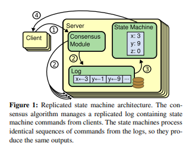
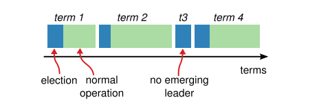
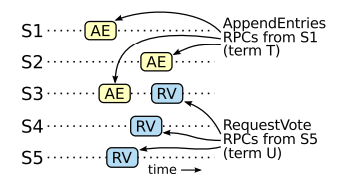
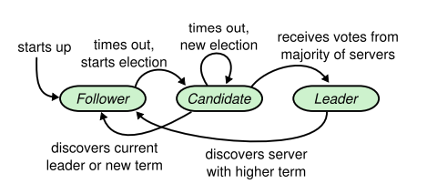
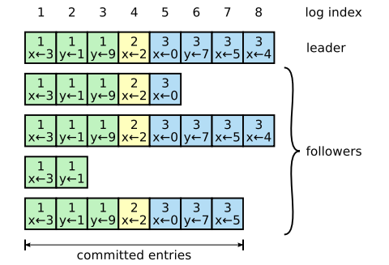
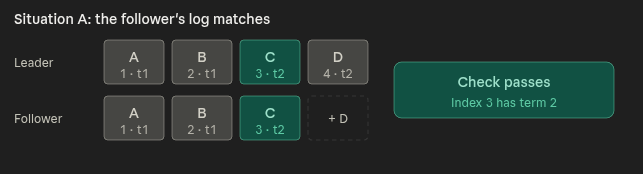
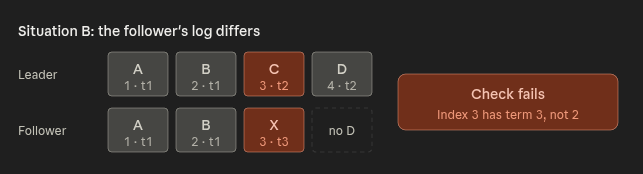
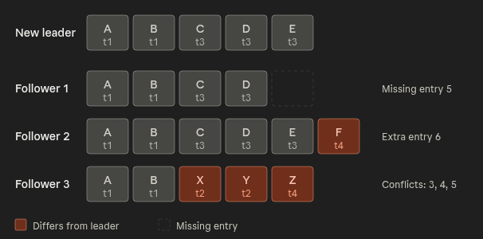
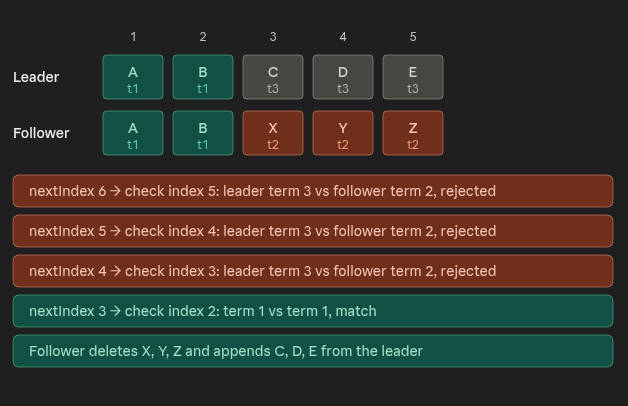
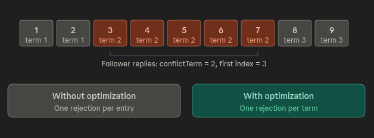

Understanding Leader Election and Log Replication in Raft
I was reading the Raft paper and wanted to write about its two main components: leader election and log replication. This blog explains both in a super intuitive way.
The original research paper is here: In Search of an Understandable Consensus Algorithm.
What is consensus?
Consensus helps multiple computers agree on one correct answer without depending on a single central computer.
Why do we need a consensus algorithm?
Because the main job of Raft is log replication (data replication), and the logs must stay consistent across all servers.
The paper mentions that Raft was invented because the first popular consensus algorithm (Paxos) was hard to understand. After designing Raft, the authors also asked students which one was easier to understand, and the majority answered Raft.
Basic concepts
Before going directly into the algorithm, let’s understand a few concepts that will help us see how Raft works:
- State machine
- Log
- Replicated log
- Leader, follower, candidate
- Term
State machine
A state machine is simply a program that executes commands in the same order on all servers (nodes) so that every server maintains the same data. By “simple program” I just mean a piece of code that takes an instruction, performs an operation and updates stored data.

Log
A log is a list of commands stored on the local storage of each server.
Replicated log
The main job of Raft is to replicate data, and that data is the log. Replication means the data is stored on different machines to avoid a single point of failure.
Leader
There are multiple servers (nodes) in a distributed system, and one of them manages the incoming flow of commands and transfers them to all the other servers. That server is the leader.
Follower
Followers are the nodes connected to the leader. They follow the leader’s instructions.
Candidate
A candidate is a server that takes part in an election, just like in a normal election.
Term
Think of a simple election. When a candidate is elected president, they serve a term, and if it is their first time as president, it is their first term. That’s all a term is. In Raft, time is divided into terms, and each term begins with an election.

Why does every server maintain a current term number?
Imagine there are 5 servers (S1, S2, S3, S4, S5):
- In Term 5, S1 becomes leader.
- S1 gets disconnected from the rest of the cluster.
- The remaining servers elect S3 in Term 6.
- S3 becomes the new leader.
Now S1 suddenly reconnects. It still thinks, “I’m the leader!”, but the rest of the cluster knows S3 is the leader. How do we prevent S1 from creating confusion?
Every server maintains a current term number, and servers include it in every message they send. When S1 sees a message carrying Term 6, it realizes its own term is outdated, updates it, and steps down to follower. Any request S1 sends with the stale Term 5 is rejected.
How do servers communicate with each other?
They use RPC (Remote Procedure Call). Two main RPCs are used for communication:
- RequestVote RPC: a candidate sends a message to the other servers: “Hey! I’m trying to become leader. Please vote for me.” Other servers respond with their votes.
- AppendEntries RPC: the leader sends a message to followers: “Here are the log entries you need to store.” It also sends periodic empty AppendEntries messages to say: “I’m still alive. I’m still the leader. Don’t start an election.”

Heartbeat mechanism
Imagine the leader sends a message every 100 milliseconds. Even if it has no new log entries, it sends an empty AppendEntries RPC. Followers keep receiving these messages and know the leader is alive. If a follower stops receiving them for long enough, it suspects the leader has failed and starts an election. This is called the heartbeat mechanism.
What if an RPC gets lost?
Networks are unreliable. Say S1 sends an RPC to S2 and the message gets lost. Raft simply retries the RPC if it doesn’t receive a response within a reasonable time. Raft also sends RPCs to multiple servers in parallel rather than waiting on one server before contacting another, which improves performance.
Leader Election

Now let’s move to the most important mechanism of Raft: leader election.
Imagine you have 5 servers: S1, S2, S3, S4 and S5. They need to agree on one thing: who is the leader?
Why do we need a leader?
Because the leader is the one who maintains log replication and consistency across the whole distributed system. The leader receives client requests and replicates them across the servers.
What if the leader crashes?
In that case a new leader must be elected.
Say S1 crashes. S2, S3, S4 and S5 are waiting for a heartbeat from S1, but nothing arrives. They don’t immediately panic, because maybe the network is just slow. Instead, each follower waits for a certain amount of time called the election timeout. Think of it as: “I’m giving my leader some time to respond. If I hear nothing within this time, I’ll assume the leader is unavailable.” When the timeout expires, a follower decides to start an election.
Election timeout: the amount of time a follower waits without receiving a heartbeat from the leader before deciding that the leader might have failed.
How does an election start?
Suppose S2’s election timeout expires first. S2 performs three actions:
- Increments its current term.
- Changes its state from follower to candidate.
- Votes for itself.
How does a candidate ask others for votes?
S2 sends a message to all other servers: “Hey! I want to become the leader. Please vote for me.” This message is a RequestVote RPC.
S3, S4 and S5 can vote for S2, but there is one very important rule: each server can vote for at most one candidate in a given term.
- S3 votes for S2 in Term 5.
- S3 cannot vote for S4 in Term 5.
- S3 can vote again in Term 6.
Why? Otherwise, multiple candidates could collect votes from the same server, making elections meaningless.
How many votes are needed to win?
A candidate needs a majority, which means more than half of the votes.
Majority = ⌊5/2⌋ + 1 = 3
Majority voting guarantees that two candidates cannot both win the same term. Any two majorities in the same cluster must share at least one server, and that server cannot vote for two different candidates in the same term. This property is called Election Safety.
Edge cases
What if another candidate appears during an election?
Suppose S2 is a candidate in Term 5, and while the election is going on it receives an AppendEntries RPC from S3, claiming that S3 is the leader. S2 checks the term number in that message. There are two possibilities:
- If S3’s term is greater than or equal to S2’s term, S2 accepts S3 as the legitimate leader, stops campaigning and goes back to being a follower.
- If S3’s term is smaller than S2’s term, S3 is outdated. S2 rejects S3’s RPC and remains a candidate.
What if all nodes start an election at the same time?
Imagine S1 crashes, and S2, S3, S4 and S5 all have their election timeouts expire at almost exactly the same time. All four become candidates and all four vote for themselves. Nobody gets a majority, so nobody becomes the leader. This is a split vote.
The solution: randomized election timeouts
Instead of giving every server the same election timeout, Raft gives each server a randomized timeout, for example between 150ms and 300ms.
Example: S2 gets a head start. Before S3, S4 and S5 reach their timeouts, they receive S2’s election messages and vote for S2. S2 gets a majority and becomes the leader. Then S2 sends heartbeats, and the others reset their election timers and remain followers.
The result: one leader gets elected without everyone fighting for leadership.
And if a split vote happens again? The candidates independently choose new randomized timeouts before retrying, which makes it unlikely that they will all start their next election at the same moment. That’s the beauty of randomized election timeouts.
Log Replication
Log replication is one of the most important jobs of Raft. It is how Raft makes sure multiple servers maintain identical logs, even when servers crash, restart or become leaders at different times.
Let’s understand it step by step, starting with the basics and then connecting all the mechanisms.
What is a log in Raft?
Imagine a cluster of five servers: S1 is the leader, and S2, S3, S4 and S5 are followers. One leader coordinates the replication of commands across the followers.
Suppose a client sends this request:
SET x = 10The leader does not immediately execute this command. Instead, it first adds the command to its log. A log is essentially an ordered sequence of commands that the server must eventually execute. For example:
| Index | Term | Command |
|---|---|---|
| 1 | 1 | SET x = 10 |
| 2 | 1 | SET x = 20 |
Each log entry contains three important things:
- Index: the position of the entry in the log.
- Term: the election term in which the leader received the command.
- Command: the actual operation that must be executed.
We already know what a term is from the discussion above. The index is the position of an entry in the log, and we need it because all servers must execute commands in the same order.
For example:
SET x = 10
SET x = 20If one server executes command 2 before command 1, its final value of x will be different from the others. Therefore, log ordering is essential.
What does “committed” mean in a Raft log?
A committed log entry is one that is safely replicated on a majority of servers and is guaranteed to be part of the system’s agreed-upon history. Commitment is needed in Raft to ensure that all servers agree on which commands are final, and to prevent the loss or reversal of already accepted operations when a leader crashes.
Remember these four different concepts:
- Appended = added to a server’s log.
- Replicated = copied to other servers.
- Committed = safe to apply according to Raft’s commitment rules.
- Applied = executed by the state machine.

The Log Matching Property
Now we will understand a very important concept, which is the central part of log replication.
Raft wants the logs of different servers to remain consistent, so it maintains two important properties. Together, they are called the Log Matching Property.
Property 1: same index and same term means same command
The paper states:
If two entries in different logs have the same index and term, then they store the same command.
Suppose two servers have the following logs. Compare index 3:
Server A: Index = 3, Term = 2, Command = C
Server B: Index = 3, Term = 2, Command = CBoth have the same command. Why? Because Raft follows an important rule: a leader never creates more than one log entry with a given index in a given term. For example, suppose Server A is the leader in term 2. It creates:
Index = 3, Term = 2, Command = CIt will never create a different entry at index 3 while it is still the leader of term 2, and log entries never change their position. So any entry anywhere in the cluster with index 3 and term 2 must be this very same entry.
Property 2: same index and same term means identical preceding entries
The second property is stronger. The paper states:
If two entries in different logs have the same index and term, then the logs are identical in all preceding entries.
Suppose Server A and Server B both have an entry with Index = 4 and Term = 2. Then their logs must also be identical at every index before 4.
The logs are identical through index 4. If two logs match at index 4 in both index and term, they must match completely from index 1 through index 4. They cannot have different commands at index 1, 2 or 3.
Why does this property hold? It is guaranteed by the consistency check performed by the AppendEntries RPC. Let’s understand that mechanism.
What is the AppendEntries RPC?
We know what AppendEntries is from above. Its job is the following:
- Replicate new log entries to followers.
- Send heartbeats to followers.
- Inform followers about the commit index.
Suppose the leader has this log:
| Index | Term | Command |
|---|---|---|
| 1 | 1 | A |
| 2 | 1 | B |
| 3 | 2 | C |
| 4 | 2 | D |
It wants to send entry 4 to a follower. The leader does not simply send “Entry 4 = D”. Instead, it also sends information about the entry immediately before the new entry. This is called the previous log index and previous log term:
AppendEntries RPC:
prevLogIndex = 3
prevLogTerm = 2
entries = [
(index=4, term=2, command=D)
]The follower checks:
Do I have an entry at index 3?
If yes:
Does its term equal 2?
If both conditions are true:
Accept the new entries.
Otherwise:
Reject the request.Let’s see both situations.
Situation A: the follower’s log matches
Leader:
Index: 1 2 3 4
Term: 1 1 2 2
Log: A B C D
Follower:
Index: 1 2 3
Term: 1 1 2
Log: A B CThe leader sends prevLogIndex = 3 and prevLogTerm = 2. The follower checks: do I have index 3? Yes. Is its term 2? Yes. The consistency check succeeds, and the follower appends entry 4. Now both logs are:
Leader: A B C D
Follower: A B C D
Situation B: the follower’s log does not match
Leader:
Index: 1 2 3 4
Term: 1 1 2 2
Log: A B C D
Follower:
Index: 1 2 3
Term: 1 1 3
Log: A B XThe leader sends prevLogIndex = 3 and prevLogTerm = 2. The follower checks: do I have index 3? Yes. Is its term 2? No, its term is 3. The consistency check fails, so the follower rejects the request and does not append entry D. This is how Raft prevents different logs from silently diverging.

Why do logs become inconsistent?
During normal operation, one leader exists, it sends entries to followers, followers accept entries, and all logs remain consistent. But distributed systems experience failures:
- A leader might crash before replicating all its entries.
- A follower might be disconnected from the network.
- A server might crash and restart with an older or incomplete log.
These failures can create inconsistent logs.

The paper identifies three general situations.
Situation 1: the follower is missing entries
Suppose the old leader has:
Index: 1 2 3 4 5
Log: A B C D EBut a follower has:
Index: 1 2 3
Log: A B CThe follower is missing entries D and E. This can happen if the follower was unavailable when the leader replicated those entries.
Situation 2: the follower has extra uncommitted entries
Suppose the old leader received a command and appended it to its log. However, before replicating it to a majority, the leader crashed. The entry is not committed. The old leader’s log might have been:
Index: 1 2 3 4
Term: 1 1 2 2
Log: A B C DA follower might have:
Index: 1 2 3 4
Term: 1 1 2 2
Log: A B C DAt this moment, they match. But another server might become leader without that uncommitted entry. For example, the new leader’s log might be:
Index: 1 2 3
Term: 1 1 2
Log: A B CThe follower has an extra entry D that the new leader doesn’t have. Notice that an entry can exist in a log without being committed. That is why storing an entry is not the same as committing it.
Situation 3: the follower has both missing and extra entries
This is the most complicated situation. A server might have been an old leader in an earlier term, crashed, restarted, become leader again, and crashed once more. Its log could contain entries from multiple terms that are not present in the new leader’s log.
New leader’s log
| Index | Term | Entry |
|---|---|---|
| 1 | 1 | A |
| 2 | 1 | B |
| 3 | 3 | C |
| 4 | 3 | D |
| 5 | 3 | E |
Follower’s log
| Index | Term | Entry |
|---|---|---|
| 1 | 1 | A |
| 2 | 1 | B |
| 3 | 2 | X |
| 4 | 2 | Y |
| 5 | 4 | Z |
The follower has entries X, Y and Z that conflict with the leader’s entries, and it is missing the leader’s entries C, D and E. This is the kind of situation the leader must repair.
Important: the entries in this example are illustrative. The actual election and commitment rules of Raft determine which histories can occur.
How does Raft repair inconsistent logs?
This is the most important practical mechanism. The paper says:
In Raft, the leader handles inconsistencies by forcing the followers’ logs to duplicate its own.
In simple terms, the new leader’s log becomes the source of truth for repairing the follower’s conflicting uncommitted suffix. Suppose the new leader has:
Leader:
Index: 1 2 3 4 5
Term: 1 1 3 3 3
Log: A B C D EThe follower has:
Follower:
Index: 1 2 3 4 5
Term: 1 1 2 2 2
Log: A B X Y ZThe logs match only up to index 2. The leader must:
- Find the latest index where both logs agree.
- Remove the follower’s entries after that point.
- Send its own entries after that point.
- Make the follower’s log match its own.
What is nextIndex?

The leader maintains a variable called nextIndex for every follower. For example:
nextIndex[S2] = 6
nextIndex[S3] = 6
nextIndex[S4] = 6
nextIndex[S5] = 6Why 6? Because the leader has five entries, so the next entry it would send is at index 6. In general:
nextIndex = lastLogIndex + 1When a new leader is elected, it initially sets every follower’s nextIndex to the index immediately after the last entry in its own log. This is an optimistic assumption: the leader assumes that followers are almost as up-to-date as itself. But this might be wrong.
What happens when AppendEntries fails?
Take our example. Initially nextIndex = 6. The leader tries to send entries beginning at index 6, with prevLogIndex = 5 and prevLogTerm = 3. But the follower has Index 5, Term 2. The consistency check fails, and the follower rejects the request. The leader decrements nextIndex and retries:
- nextIndex = 5: prevLogIndex = 4, prevLogTerm = 3. The follower has term 2 at index 4. Rejected.
- nextIndex = 4: prevLogIndex = 3, prevLogTerm = 3. The follower has term 2 at index 3. Rejected.
- nextIndex = 3: prevLogIndex = 2, prevLogTerm = 1. The follower has Index 2, Term 1. The consistency check succeeds.
The leader has now found the latest matching entry.
How are conflicting entries deleted?
Once the leader finds the matching point, it sends its entries starting from index 3. The follower:
- Keeps entries 1 and 2.
- Deletes conflicting entries 3, 4 and 5.
- Appends the leader’s entries C, D and E.
The resulting logs are identical:
Leader:
Index: 1 2 3 4 5
Term: 1 1 3 3 3
Log: A B C D E
Follower:
Index: 1 2 3 4 5
Term: 1 1 3 3 3
Log: A B C D EThis is called log reconciliation or log repair.
One important detail: a follower does not delete entries merely because it receives a new request. It deletes conflicting entries when it receives entries that conflict with its existing entries. Committed entries are protected by Raft’s safety guarantees.
Why does Raft use a decrementing nextIndex?
You might wonder: why doesn’t the leader directly ask the follower where the logs match? The basic Raft protocol uses a simple approach. It starts from the end of the leader’s log and moves backward until it finds a matching entry:
nextIndex = 6 -> Check index 5 -> Failure
nextIndex = 5 -> Check index 4 -> Failure
nextIndex = 4 -> Check index 3 -> Failure
nextIndex = 3 -> Check index 2 -> SuccessThis works, but it can require several rejected RPCs. Suppose the follower has 100 conflicting entries. The leader might need approximately 100 rejection attempts before finding the matching point. This is why the paper discusses an optimization.
Optimization: skip an entire conflicting term

Raft can optimize the process by allowing the follower to return additional information when rejecting an AppendEntries request. Instead of simply saying “Request rejected”, the follower can tell the leader:
- The conflicting term is 2.
- The first index containing term 2 is 50.
Now the leader can skip all entries from that conflicting term. Suppose the follower has:
| Index | Term |
|---|---|
| 1 | 1 |
| 2 | 1 |
| 3 | 2 |
| 4 | 2 |
| 5 | 2 |
| 6 | 2 |
| 7 | 2 |
| 8 | 3 |
| 9 | 3 |
If the leader discovers a conflict in term 2, the follower can tell it:
conflictTerm = 2
firstIndexOfConflictTerm = 3The leader can move nextIndex directly to an appropriate position, skipping the remaining entries of term 2 rather than checking every individual entry. Thus:
- Without optimization: potentially one rejected RPC per conflicting entry.
- With optimization: approximately one rejected RPC per conflicting term.
If there are 100 conflicting entries spread across 3 terms, the optimized approach can significantly reduce communication. This is especially useful for long logs with many conflicting entries.
The Leader Append-Only Property
The paper also says:
A leader never overwrites or deletes entries in its own log.
This is called the Leader Append-Only Property. Once a server becomes a leader, it can only append new entries to its own log. It cannot go back and modify or delete existing entries in its own log. For example, before receiving a new command:
Leader: A B C DAfter receiving a new command E:
Leader: A B C D EIt can append E. But it cannot do this:
Leader: A B X DIt cannot replace C with X.
Then why can a follower delete entries? Because the leader and follower have different responsibilities. The leader’s own log is append-only, while a follower’s conflicting uncommitted entries can be removed to bring it into agreement with the leader. The leader never modifies its own historical log entries, but it can cause followers to discard conflicting entries.
Why doesn’t the leader need special recovery procedures?
The paper says:
A leader does not need to take any special actions to restore log consistency when it comes to power.
Why? Because the same normal AppendEntries mechanism automatically repairs inconsistencies. Consider the sequence:
- A new leader is elected.
- It initializes nextIndex for each follower.
- It sends normal AppendEntries requests.
- If the follower’s log matches, the request succeeds.
- If it doesn’t match, the follower rejects the request.
- The leader decreases nextIndex and retries.
- Eventually, a matching point is found.
- The leader sends its entries and repairs the follower’s log.
There is no separate recovery protocol required. The same mechanism handles both normal replication and recovery after failures. This makes Raft relatively simple to understand and implement.
How can Raft continue working when a follower is slow?
Suppose S1 is the leader and S2 to S5 are followers. A client sends a command. The leader needs a majority of three servers. Suppose:
- S1 (Leader): Replicated
- S2: Replicated
- S3: Replicated
- S4: Slow
- S5: Disconnected
The entry can still be committed because three out of five servers have it. The leader does not need to wait for every follower. This gives Raft an important performance advantage: a single slow follower does not prevent the cluster from making progress.
However, if the leader and enough followers fail such that a majority is unavailable, Raft cannot commit new entries. This is an intentional trade-off: Raft prioritizes safety over availability when a majority cannot communicate.
A complete example: from inconsistency to consistency
Let’s put everything together. Assume three servers: S1 (new leader), S2 and S3.
S1 (Leader)
Index: 1 2 3 4 5
Term: 1 1 2 3 3
Log: A B C D ES2 (Follower)
Index: 1 2 3 4
Term: 1 1 2 2
Log: A B C XS3 (Follower)
Index: 1 2 3
Term: 1 1 2
Log: A B CStep 1: The leader initializes nextIndex. The leader has five entries, so nextIndex[S2] = 6 and nextIndex[S3] = 6.
Step 2: The leader tries S2. It sends the consistency information for index 5. S2 does not have a matching index 5, so the request is rejected. The leader decrements nextIndex and retries. Eventually it finds that index 3 matches. S2 deletes X and appends D and E.
Step 3: The leader tries S3. S3 has entries 1, 2 and 3. The consistency check at index 3 succeeds, and S3 appends D and E.
Step 4: All logs become identical.
S1 (Leader): A | B | C | D | E
S2 (Follower): A | B | C | D | E
S3 (Follower): A | B | C | D | EIf the leader has replicated an entry to a majority and the commitment rule is satisfied, it advances its commit index and informs followers through future AppendEntries RPCs. The followers then apply committed entries to their state machines in log order.
Log consistency vs. commitment safety
There is one subtle point you should not overlook. Conflicting entries in follower logs are overwritten by entries from the leader’s log, and this is safe only when coupled with one more restriction, discussed in Section 5.4 of the Raft paper. Why is it needed? Imagine:
- An old leader appends an entry.
- It replicates the entry to some servers, but not a majority.
- The entry remains uncommitted.
- A new leader is elected.
- The new leader repairs follower logs.
How do we know that the new leader won’t overwrite an entry that was already committed? Raft solves this using its election restriction and commitment rules. In particular:
- A candidate must have an up-to-date log to win an election.
- A server compares the candidate’s last log term and last log index against its own.
- A leader in its current term can directly commit an entry when it is replicated on a majority.
- Once a current-term entry is committed, all preceding entries in that leader’s log are also committed.
A leader cannot safely commit an old-term entry merely by observing that it exists on a majority. It must first commit an entry from its current term. This is a crucial detail of Raft’s safety argument, and it prevents a newly elected leader from destroying committed history.
END
so this is the deatiled explaination of raft leader election and log replication which are the most imp concepts in the paper there are still more things to discuss like edge cases which are not disucces in this blog but u can refer the paper for that.